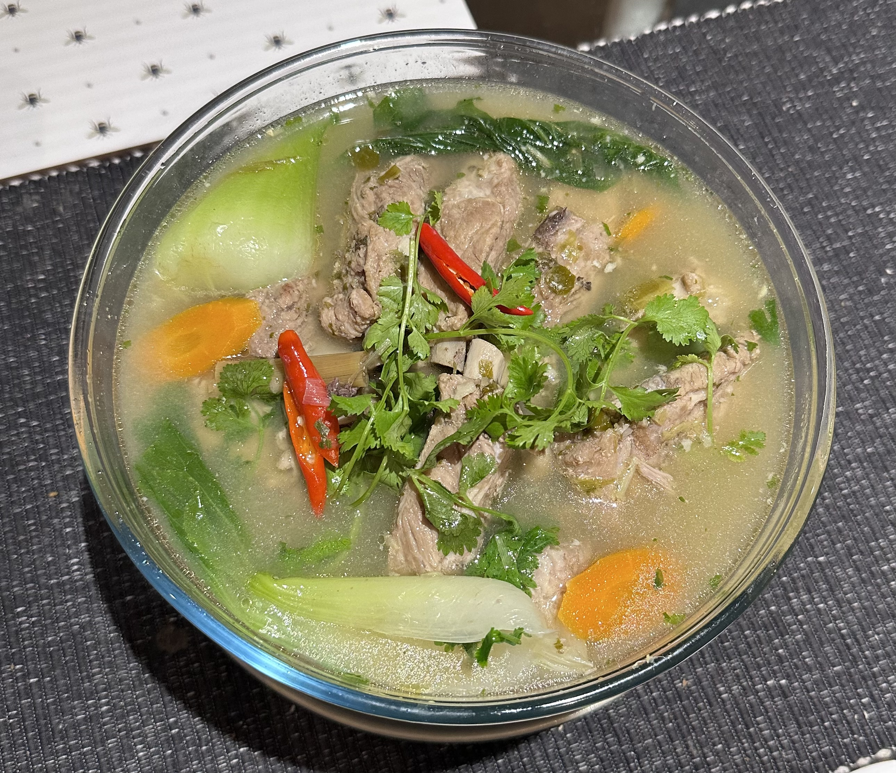

Pork-ribs-soup

Description
This is a hearty and healthy pork ribs soup. It goes quite well with white rice and chilli oil or on its own.
Ingredients
- Pork ribs
- Green chillies
- Lemon Grass
- Garlic & Ginger
- Coriander & Spring onion
- Shallot
Steps
- Grate the lemon grass, green chillies, garlic & ginger into a fine paste.
- Marinate pork ribs with the paste.
- Stew in pressure cooker until meat tender.
- Make sure you have an empty belly before consuming!